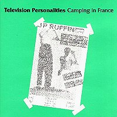

Television Personalities |
 1991 - Overground - OVER21/CD - LP/CD Songs: King And Country Three Wishes Stop And Smell The Roses La Grande Illusion Silly Girl A Picture Of Dorian Gray Jackanory Stories David Hockney's Diaries Painter Man Back To Vietnam If I Could Write Poetry Geoffrey Ingram Salvador Dali's Garden Party Never Understand Me (Here We Go 'Round The Mary Chain) Happy All The Time (CD only) Girl On A Motorcycle (CD only) Just Call Me Jack (CD only)
Television Personalities: Recorded Live - France 12/12/85. Thank you's and God bless you's to J.D. BeauVallet, Renaud, Top Popstars, Another Country and all the Les Inrockuptibles France. Design: Jocky. Many times over, the TV Personalities were the best band in the world. The first time was in 1979, for the few memorable minutes that constitute the singles "Part-time punks" and "Where Is Bill Grundy Now?" - two songs you will do me the pleasure of learning by heart for tomorrow morning. The second time was in 1980 with the magical chorus of "Smashing Time, which invented noisy-pop. It happened a third time in 1981 with the troubling vibrato from "If I Could Write Poetry", sublime, without a doubt; and then a fourth time, in the same year, when they packed their absurdist vision and embarked on a rupestrian journey into the world of Syd Barrett ("I Know Where Syd Barrett Lives", an essential). They will be on top again this month, as someone has finally had the great idea to reedit on CD a portion of their collection, which had been scattered until then throughout half a dozen labels virtually only accessible in museums! In all, the CDs bring together a dozen singles and a selection of surrealistic albums, bizarre pieces of art whose influences are well acknowledged - all of them treasures to be cherished. But for Dan Treacy, author of these wonderfully convoluted and absurd pop songs, there is no pleasure to be found in the recording of these songs. For him, it is more a necessity, a painful yet never entirely gratuitous one. These records, he releases them for his own satisfaction first and foremost, hiding his frustration under the uneasy laughs born out of sarcasm and parody. One has to admit that the TVP's albums are just about as funny as a sad clown. Underneath the farce lie bare emotions, repressed pride, and a unique beauty characteristic of genuine texts full of fresh, naively child-like words. A true hard-ass who knowingly refuses to listen to the call of glory (and that's when he doesn't trip himself in the name of some masochistic personal integrity), Dan Treacy has until now preferred to revert to long periods of cathartic silence or to veer into self-parody, nihilistic pop in which he joyfully takes vicious aim at all "commercial" temptations. He has artfully dodged commercial success by rendering every potential hit virtually unpresentable to the masses (adding a silly psychedelic touch here, some childish and mischievous vocal pranks there), incapable of facing his own fascination with pop-music. It is therefore difficult to imagine how "Privilege", the TV Personalities sixth album, due out in the spring, could put them up on the pedestal which they most certainly deserve, but which they prefer to shun out of (false?) modesty. Pity. Cause once more - long enough to have one more "Salvador Dali's Garden Party" or to visit "Paradise Is for the Blessed" one last time - they will be the best band in the world again. Or almost. [JD Beauvallet] Translated from the original french notes by Claire Valade. |